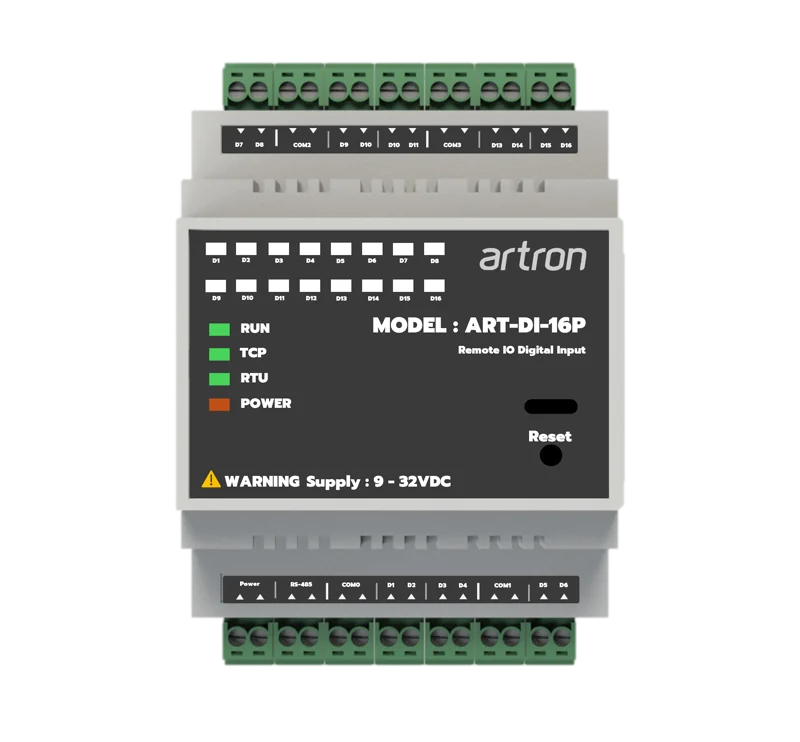
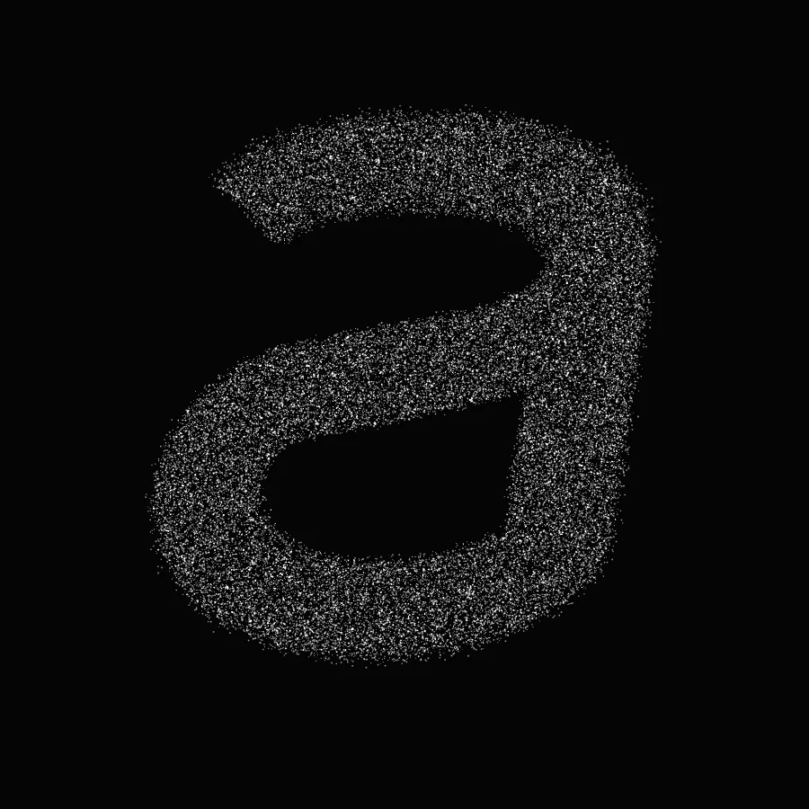
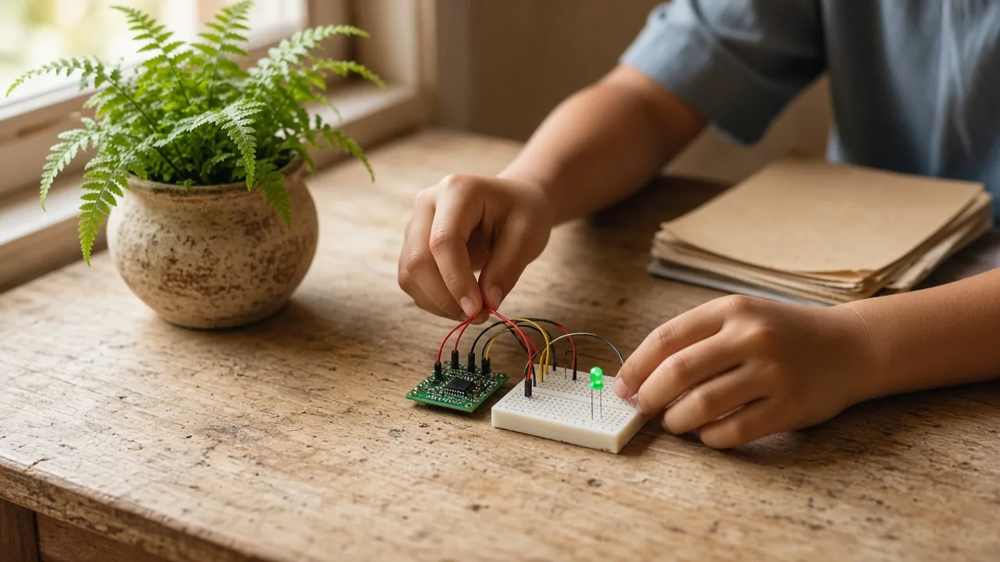
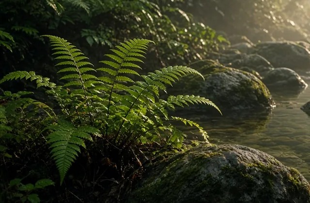
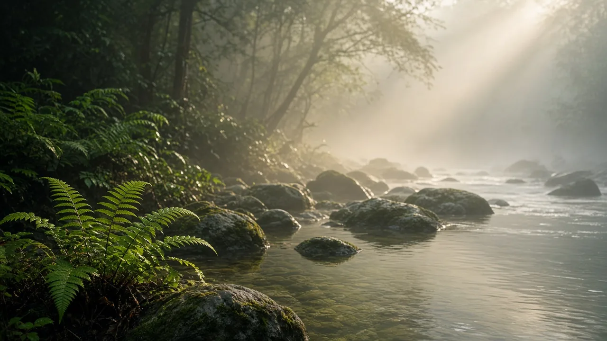
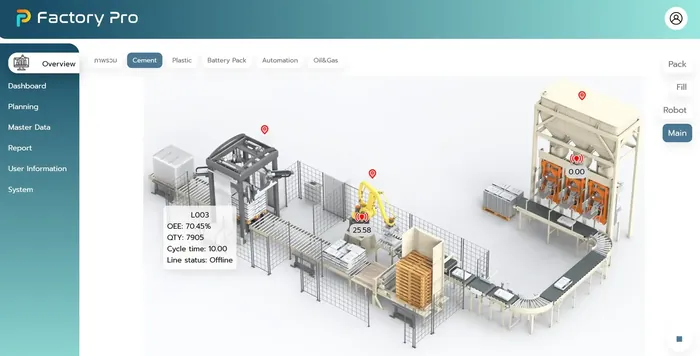
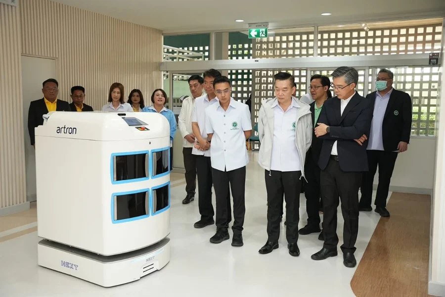
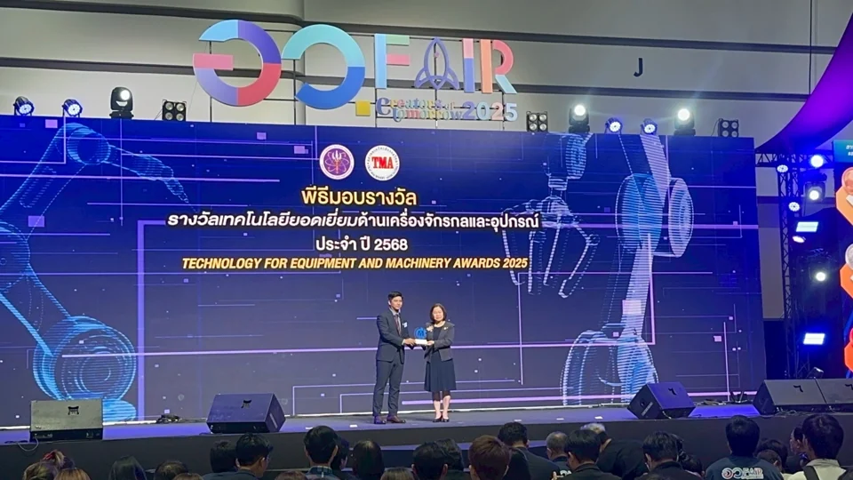
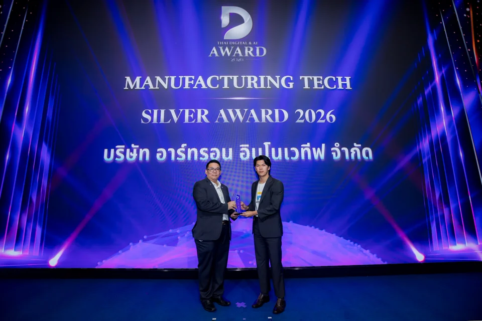

เทคโนโลยี
ฝีมือที่ประณีต
ลงมือสร้างอุปกรณ์ ซอฟต์แวร์ และโซลูชัน IoT ตั้งแต่โจทย์จนถึงใช้งานจริง


Art + Electronic
เทคโนโลยี · มนุษย์ · ธรรมชาติ
เทคโนโลยีที่ดี เริ่มต้นที่คน.

ความสงบ · Stillnessฝุ่นทุกเม็ดค่อย ๆ วางตัวลง
เหมือนทรายที่ถูกคราดอย่างตั้งใจ
การเดินทางเข้าสู่ภายใน · Inwardการเดินทางที่แท้จริง
คือการเดินทางเข้าสู่ภายใน
ศิลปะ + อิเล็กทรอนิกส์ · สามสิ่งในวงเดียว

ภาพประกอบโลหะ · แก้ว · ไม้ · ทราย
เทคโนโลยี · มนุษย์ · ธรรมชาติ
เทคโนโลยีที่วิ่งนำหน้า โดยไม่รอหัวใจของผู้คน ย่อมพาเราห่างจากสิ่งที่เรารัก ที่ Artron เราเชื่อว่าสามสิ่งต้องเติบโตไปด้วยกัน: เทคโนโลยีที่ช่วยให้สองมือทำได้ · มนุษย์ที่รู้ว่าทำไปเพื่ออะไร · และธรรมชาติที่ยังคงอยู่ให้คนรุ่นถัดไป
เทคโนโลยี
ลงมือสร้างอุปกรณ์ ซอฟต์แวร์ และโซลูชัน IoT ตั้งแต่โจทย์จนถึงใช้งานจริง

มนุษย์
Academy ชวนเด็ก ๆ เรียนรู้ผ่านการลงมือสร้าง

ธรรมชาติ
เราออกแบบเทคโนโลยีให้อยู่ร่วมกับโลกใบนี้อย่างเกื้อกูล

Who We Are
“The IoT solutions company develops the knowledge-based capabilities of engineering to create new products to meet the needs of customers.”
เราให้คำปรึกษา ออกแบบ และวิจัยพัฒนาเทคโนโลยี IoT แบบครบวงจร — วิเคราะห์ปัญหา ออกแบบผลิตภัณฑ์ และต่อยอดเป็นโซลูชันใหม่ เพื่อเพิ่มขีดความสามารถของระบบเดิมให้บริหารจัดการได้ดีขึ้น
เปิดพื้นที่ให้การเปลี่ยนแปลงที่เกิดจากงานของทุกคนในทีมอยู่เสมอ
เป็นนักสำรวจที่ช่างสงสัยและมุ่งมั่น และลงมือจริงเพื่อส่งมอบงานที่ดีอย่างต่อเนื่อง
คาดการณ์ความต้องการของผู้เกี่ยวข้อง และพร้อมสนับสนุน แนะนำ และเป็นพี่เลี้ยงให้ผู้อื่นสำเร็จ

ต้นไม้ไม่ข้ามฤดู ลำธารไม่เร่งสายน้ำ — เราเรียนรู้ที่จะสร้างเทคโนโลยีในจังหวะเดียวกับชีวิต
ภาพประกอบ · ลำธารยามเช้า
Consult and Design
วิเคราะห์ปัญหาเพื่อออกแบบระบบตามความต้องการของลูกค้า
Research and Development
ตั้งแต่ความต้องการ การออกแบบฮาร์ดแวร์และซอฟต์แวร์ การทดสอบตามมาตรฐาน จนถึงการติดตั้งใช้งาน
Service
บริการหลังการขาย ให้คำปรึกษา และสอนการติดตั้งใช้งาน
Application Area
Smart ManufacturingSmart HealthcareSmart Solar FarmingSmart AgricultureSmart Power MonitoringSmart Environmentเชื่อมการผลิต คลังสินค้า การบำรุงรักษา และการมองเห็นด้วย AI — แพลตฟอร์มบริหารการผลิตด้วย IoT, Big Data และ AI สำหรับโรงงานในยุค 4.0
Measures Overall Equipment Effectiveness (Availability × Performance × Quality) per machine in real time and shows where production time is lost.
Warehouse management with QR/RFID item identity, real-time stock accuracy and full movement traceability, integrated with ERP.
Predictive maintenance and machine care that reduces unplanned downtime.
Energy and carbon footprint monitoring for cost reduction and ESG reporting.
3D digital twin combining OEE, defects, energy and downtime in a single visual model of the plant.
AI camera intelligence for real-time quality inspection and 24/7 safety monitoring on the production line.

FacMind · เลือกซื้อเพิ่มเติม — ผู้ช่วยแชท AI สำหรับทุกโมดูล ให้ทีมงานแชทถามและค้นข้อมูลที่เกี่ยวข้อง และช่วยพนักงานใหม่เรียนรู้การใช้งานระบบได้สะดวกขึ้น
ได้รับการสนับสนุนจากสำนักงานส่งเสริมเศรษฐกิจดิจิทัล (depa) เพื่อพัฒนา Factory Pro แพลตฟอร์มดิจิทัลสำหรับโรงงานไทย
Hardware · LoRaWAN
อุปกรณ์แปลง RS-485 เป็น LoRaWAN สำหรับเชื่อมเซนเซอร์ได้ง่าย ส่งข้อมูลไร้สายได้ระยะไกล ใช้แบตเตอรี่ได้นานกว่าหนึ่งปีโดยไม่ต้องเปลี่ยน
Official Partner with SCG
ติดตามค่าสำคัญของเครื่องจักร เช่น การสั่นสะเทือน อุณหภูมิ และการตั้งแนว แบบเรียลไทม์บนแดชบอร์ด Factory PRO เพื่อการบำรุงรักษาเชิงพยากรณ์
ห้องเรียนที่เริ่มจากความอยากรู้
ภาพประกอบบรรยากาศการเรียนรู้ที่ใช้ภาพจริงแทนได้ภายหลัง
ให้ความสงสัยได้เริ่มต้น ให้ความกล้าได้มีที่ยืน และให้เทคโนโลยีเติบโตไปพร้อมกับหัวใจของคนรุ่นถัดไป
สมัครเรียน · Academy ↗
Robotics · Healthcare
หนึ่งในงานต้นแบบของ Artron สำหรับบริการ ที่ให้คนดูแลคนได้ดีขึ้น
Portfolio · Healthcare · Energy · Factory
ความไว้วางใจที่ได้รับ · รางวัลของ Artron Innovative


มาตรฐาน
ISO/IEC 29110 · TÜV SÜDเสียงจากผู้ร่วมงาน
“ทีมมีความเชี่ยวชาญในงานเป็นอย่างดี ให้คำแนะนำและช่วยเหลือในการแก้ไขปัญหาได้อย่างรวดเร็ว”อาจารย์อรรถวิทย์ จันทร์ศิริ · ที่ปรึกษาโครงการ · มหาวิทยาลัยพายัพ


โลโก้และเครื่องหมายการค้าเป็นลิขสิทธิ์ของเจ้าของแต่ละราย
Official Partner

PdM Box – Official Partner with SCG · ระบบบำรุงรักษาเชิงพยากรณ์ที่เชื่อมกับ Factory PRO

Google Maps · 13.910194, 100.511081
แตะเพื่อดูแผนที่สีจริง